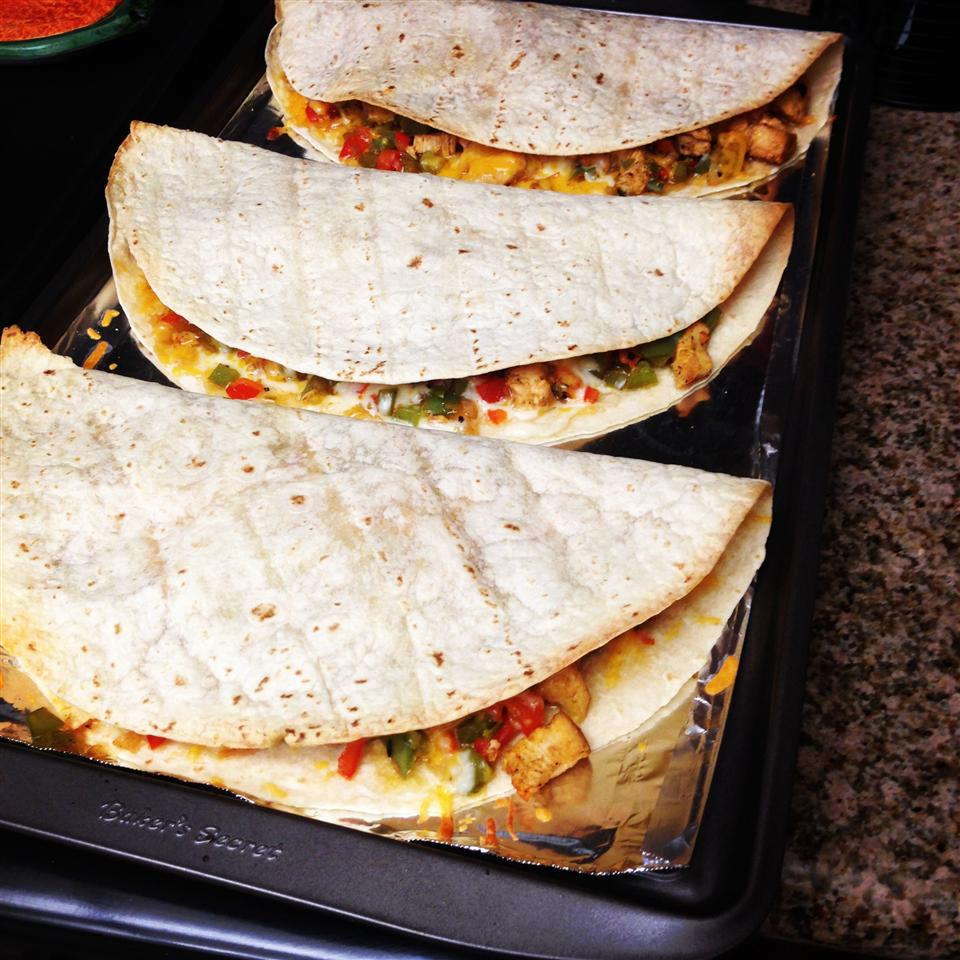

Miyamoto's Famous Quesadillas

Description
This chicken quesadilla recipe is great to make for parties. Zesty chicken, cooked peppers, and melted cheese are a delightful combination.
Cut into wedges and serve with sour cream and salsa.
Ingredients
- 1 pound skinless, boneless chicken breast, diced
- 1 (1.27 ounce) packet fajita seasoning
- 1 tablespoon vegetable oil
- 2 green bell peppers, chopped
- 2 red bell peppers, chopped
- 1 onion, chopped
- 10 (10 inch) flour tortillas
- 1 (8 ounce) package shredded Cheddar cheese
- 1 (8 ounce) package shredded Monterey Jack cheese
- 1 tablespoon bacon bits
Steps
Preheat the broiler. Grease a baking sheet.
Toss chicken with fajita seasoning, then spread onto the baking sheet. Place under the broiler and cook until chicken is no longer pink in the center, about 5 minutes.
Preheat the oven to 350 degrees F (175 degrees C).
Heat oil in a large saucepan over medium heat. Stir in bell peppers, onion, and broiled chicken. Cook and stir until vegetables have softened, about 10 minutes.
Layer half of each tortilla with chicken and vegetable mixture, Cheddar cheese, Monterey Jack cheese, and bacon bits. Fold tortillas in half and place onto a baking sheet.
Bake quesadillas in the preheated oven until cheeses have melted, about 10 minutes.
Cut each quesadilla into 4 wedges and serve.
Source for Recipe: Chicken Quesadillas